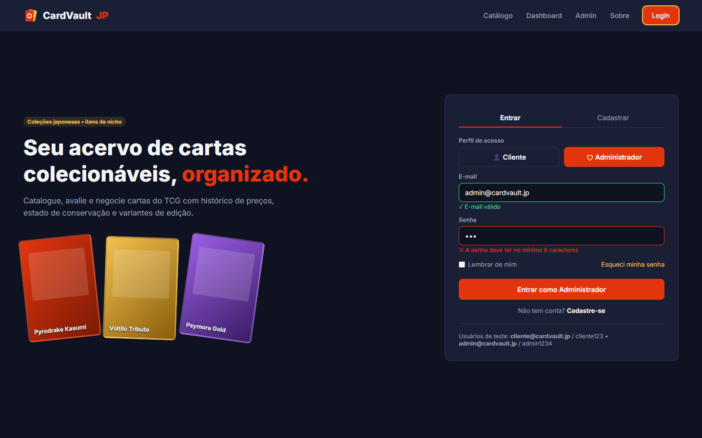
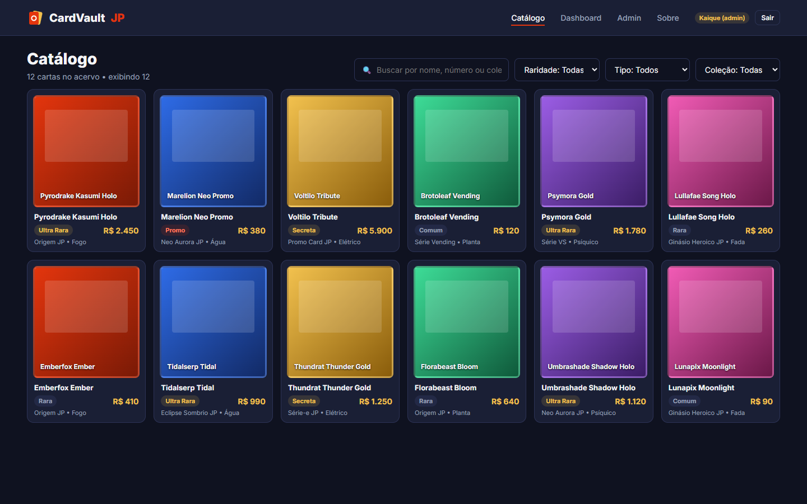
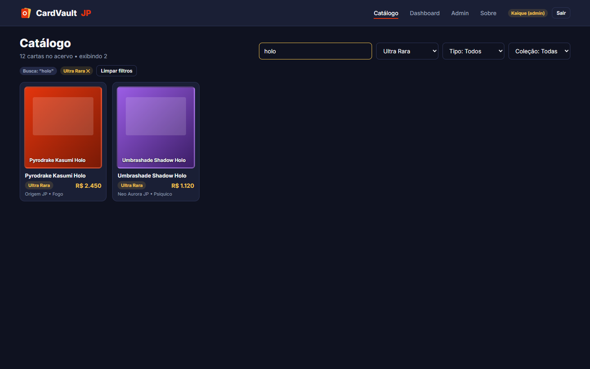
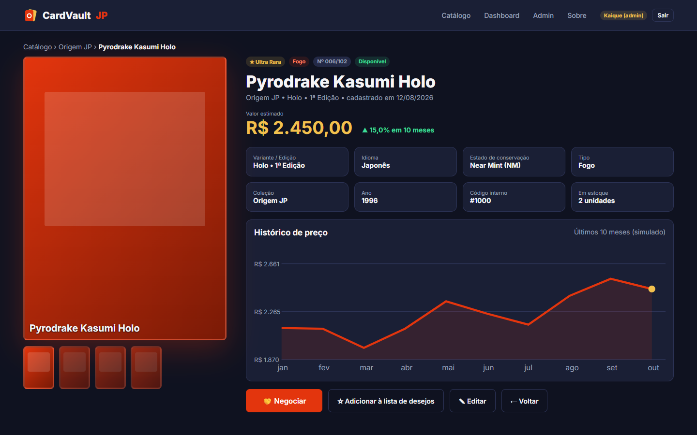
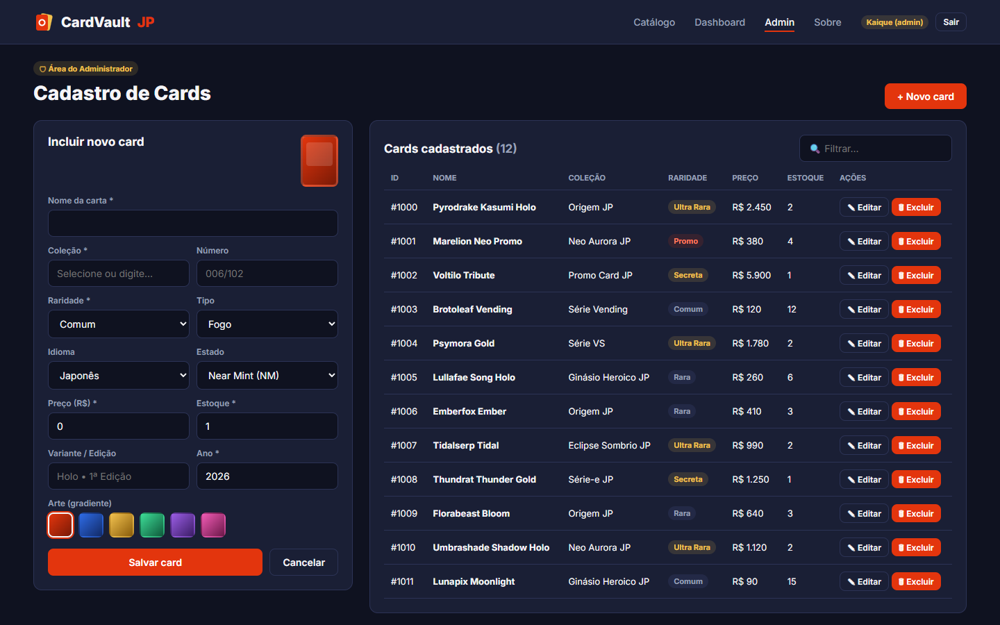
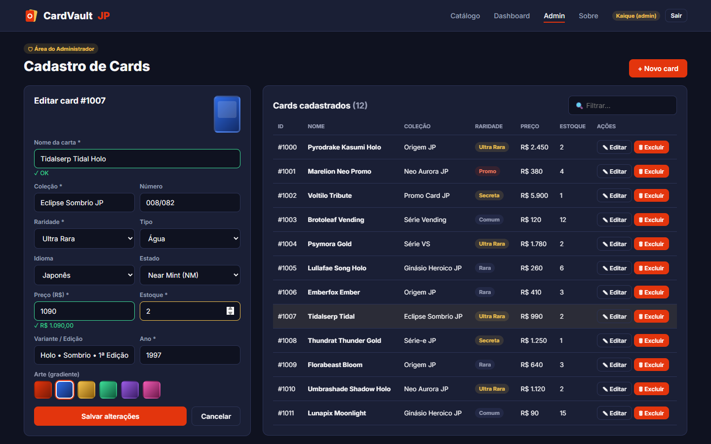
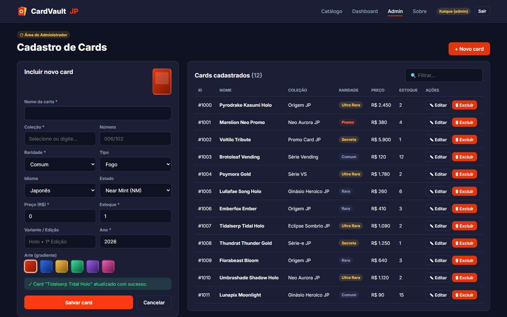
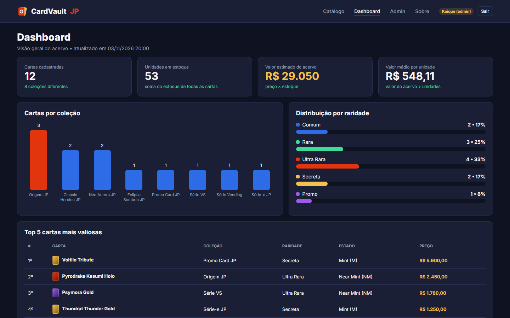
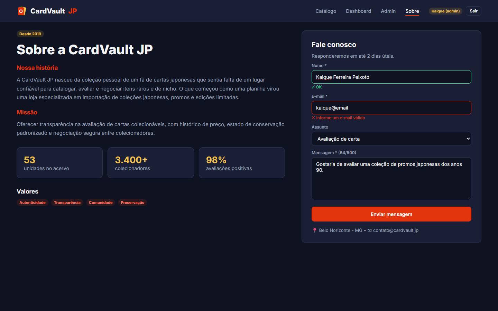

UNIVERSIDADE FUMEC
CURSO DE CIÊNCIA DA COMPUTAÇÃO
DESENVOLVIMENTO WEB FRONT-END
PROF. DÂNGELO SILVA MIRANDA
KAIQUE FERREIRA PEIXOTO
Aplicação Angular: componentes, rotas, serviços e data-binding
Belo Horizonte
2026
Kaique Ferreira Peixoto (trabalho individual).
Nome: CardVault JP.
Objetivo: oferecer a colecionadores e lojistas um ambiente único para gestão, catalogação, avaliação e negociação de cartas colecionáveis de Pokémon TCG, com foco em coleções japonesas e itens de nicho. Nesta segunda entrega, o protótipo HTML/CSS do Trabalho 01 foi convertido em uma aplicação Angular 22 baseada em NgModule, com seis páginas roteadas, um modelo de dados tipado, dados simulados (mock) e serviços que concentram toda a regra de negócio. As cartas, nomes e coleções são fictícios e as artes são gradientes CSS, sem imagens ou nomes oficiais.
Principais funcionalidades desta versão:
/cards/:id, com atributos, valor em reais, estado de conservação, histórico de preço em SVG e ações de negociar, editar e voltar;routerLink/routerLinkActive e identidade visual do protótipo (fundo #0F1220, superfícies #1A1F35, destaque #E3350D, dourado #F2C14E, texto #F5F5F7, fonte Inter, botões com 8 px de raio).cardvault-jp/
├── prototipo/ (Trabalho 01)
├── docs/ prints/ + este relatório
└── app/ projeto Angular 22 (NgModule)
├── angular.json, package.json, tsconfig*.json
└── src/
├── index.html, main.ts, styles.css (identidade visual global)
└── app/
├── app.module.ts declarations + FormsModule + LOCALE_ID pt-BR
├── app-routing.module.ts rotas da aplicação
├── app.component.* <app-navbar> + <router-outlet>
├── models/ card.model.ts, usuario.model.ts
├── mocks/ cards.mock.ts
├── services/ card.service.ts, auth.service.ts
├── pipes/ conservacao.pipe.ts
├── components/navbar/
└── pages/ catalogo/, detalhe-card/, admin-cards/,
dashboard/, sobre/, login/
O projeto foi criado com ng new cardvault-jp --no-standalone --routing --style=css --ssr=false. Todos os componentes são declarados no AppModule (standalone: false). Os arquivos gerados pelo CLI 22 com o novo padrão de nomes (app-module.ts, app-routing-module.ts) foram renomeados para a convenção app.module.ts e app-routing.module.ts.
Card (src/app/models/card.model.ts)| Campo | Tipo | Descrição |
|---|---|---|
| id | number | Código interno (gerado pelo serviço no cadastro) |
| nome, colecao, numero | string | Nome da carta, coleção e número na coleção |
| tipo | Tipo | 'Fogo' | 'Água' | 'Planta' | 'Elétrico' | 'Psíquico' | 'Fada' |
| raridade | Raridade | 'Comum' | 'Rara' | 'Ultra Rara' | 'Secreta' | 'Promo' |
| idioma, variante | string | Idioma da impressão e variante/edição (Holo, 1ª Edição...) |
| estado | Estado | Conservação: 'M' | 'NM' | 'EX' | 'GD' | 'PL' |
| preco, estoque, ano | number | Valor estimado em R$, unidades disponíveis e ano de lançamento |
| gradiente | Gradiente | Classe CSS da arte ('g1' a 'g6'), usada no lugar de imagem |
| dataCadastro | string (ISO) | Data de inclusão no acervo (exibida com o pipe date) |
O mesmo arquivo define FiltrosCard (raridade, tipo e coleção usados na pesquisa) e Contagem (par chave/quantidade usado pelo dashboard).
A constante CARDS_MOCK: Card[] contém 12 cartas fictícias (ex.: Pyrodrake Kasumi Holo, Voltilo Tribute, Psymora Gold) distribuídas em 8 coleções, 6 tipos e 5 raridades. O CardService faz uma cópia desse array ao iniciar e passa a ser o único ponto de acesso aos dados; os componentes nunca importam o mock nem manipulam o array diretamente.
providedIn: 'root')| Método | O que faz |
|---|---|
listar(): Card[] | Retorna cópias de todas as cartas do acervo. |
buscarPorId(id) | Retorna a carta com o id informado (ou undefined); usado no detalhe e na edição. |
pesquisar(termo, filtros) | Busca o termo em nome, número e coleção (sem diferenciar maiúsculas) e aplica os filtros de raridade, tipo e coleção. |
listarColecoes() | Lista as coleções distintas, ordenadas, para os selects de filtro e o formulário. |
cadastrar(card) | Valida, gera o próximo id e a data de cadastro e adiciona a carta. |
editar(card) | Valida e substitui a carta de mesmo id; lança erro se não existir. |
excluir(id) | Remove a carta e retorna true se algo foi excluído. |
total() | Quantidade de cartas distintas cadastradas. |
totalUnidades() | Soma do estoque de todas as cartas. |
valorAcervo() | Soma de preço × estoque (valor estimado do acervo). |
contagemPorRaridade() | Quantidade de cartas por raridade (gráfico de distribuição). |
contagemPorColecao() | Quantidade de cartas por coleção, em ordem decrescente (gráfico de barras). |
maisValiosos(limite) | As n cartas de maior preço (tabela do dashboard). |
historicoPreco(card) / variacaoPreco(card) | Série simulada de 10 meses terminando no preço atual e sua variação percentual (gráfico do detalhe). |
validar(card) (privado) | Regras de negócio: nome e coleção obrigatórios, preço > 0 e estoque ≥ 0. |
Também foi criado o AuthService, com usuários mock (cliente@cardvault.jp e admin@cardvault.jp) e os métodos login(email, senha, perfil), registrar(), logout(), estaLogado() e isAdmin(), que servirá de base para os Route Guards.
| Caminho | Componente / ação |
|---|---|
'' | redirectTo /catalogo (pathMatch: 'full') |
catalogo | CatalogoComponent |
cards/:id | DetalheCardComponent (lê o parâmetro com ActivatedRoute.paramMap) |
admin/cards | AdminCardsComponent (aceita ?editar=id para abrir a edição) |
login | LoginComponent |
dashboard | DashboardComponent |
sobre | SobreComponent |
** | redirectTo /catalogo (rota coringa) |
Navegação programática (Router.navigate): clicar em um card do catálogo ou do top 5 do dashboard abre ['/cards', id]; os botões Voltar e Editar do detalhe vão para o catálogo e para /admin/cards?editar=id; salvar no admin volta para a lista /admin/cards; o login redireciona conforme o perfil e o logout da navbar volta para /login.
| Recurso | Exemplo no código | Onde aparece |
|---|---|---|
Interpolação {{ }} | {{ card.nome }}, {{ totalAcervo }} cartas no acervo | Todas as páginas e navbar |
Property binding [ ] | [routerLink]="link.rota", [value]="r", [disabled]="propostaEnviada", [attr.points], [style.width.%] | Navbar, filtros, detalhe (SVG), dashboard, admin |
Event binding ( ) | (click)="abrirDetalhe(card)", (ngSubmit)="salvar(f)", (ngModelChange)="filtrar()" | Catálogo, detalhe, admin, login, sobre, navbar |
Two-way [(ngModel)] | [(ngModel)]="termo", [(ngModel)]="modelo.preco" | Busca/filtros do catálogo, formulário e filtro do admin, login, contato |
*ngFor | *ngFor="let card of cards" | Grade do catálogo, tabela do admin, links da navbar, gráficos do dashboard, opções dos selects |
*ngIf (com else) | *ngIf="cards.length > 0; else vazio", *ngIf="card as c; else naoEncontrado" | Catálogo, detalhe, mensagens de validação e de sucesso, navbar (logado/deslogado) |
[ngClass] | [ngClass]="card.gradiente", [ngClass]="{ err: nome.invalid && ... }" | Arte das cartas, tags de raridade, estados de validação, abas do login |
[ngStyle] | [ngStyle]="{ height: ... + 'px' }", [ngStyle]="{ opacity: m }" | Barras do dashboard, miniaturas do detalhe, cartas da vitrine do login, estoque zerado no admin |
Pipe currency | {{ card.preco | currency:'BRL' }} (locale pt-BR) | Catálogo, detalhe, admin, dashboard |
Pipes date e number | {{ c.dataCadastro | date:'dd/MM/yyyy' }}, {{ variacao | number:'1.1-1' }} | Detalhe e dashboard |
Pipe próprio conservacao | {{ c.estado | conservacao }} → "Near Mint (NM)" | Detalhe, select de estado do admin, dashboard |
| Template reference / validação | #f="ngForm", #nome="ngModel", required, minlength, min="0.01", email, pattern | Admin, login, sobre |
routerLink / routerLinkActive | routerLinkActive="on" | Navbar e trilha do detalhe |
Os prints a seguir foram capturados com a aplicação em execução (ng serve) na resolução 1440×900, usando Playwright, com o usuário administrador logado.

[ngClass] e *ngIf;AuthService (usuários mock);Router.navigate leva o admin para /admin/cards e o cliente para /catalogo; a navbar passa a exibir o usuário e o botão Sair;

*ngFor a partir de CardService.pesquisar();[(ngModel)], atualizando a lista a cada alteração;currency:'BRL' e cor da raridade com [ngClass];Router.navigate(['/cards', id]).
:id com ActivatedRoute e obtém os dados com CardService.buscarPorId(); exibe mensagem se o id não existir;conservacao), tipo, coleção, ano, código e estoque; data de cadastro com date;[attr.points]) e variação percentual;


#f="ngForm") para cadastrar e editar, com prévia da arte atualizada em tempo real;*ngIf e destaque com [ngClass];*ngFor, filtro rápido e botões Editar (carrega o card no formulário) e Excluir (com confirm());CardService (cadastrar, editar, excluir); o CRUD funciona de verdade durante a sessão e reflete no catálogo e no dashboard;Router.navigate(['/admin/cards']) volta para a lista.
[ngStyle] para a altura) e distribuição por raridade ([style.width.%]);
CardService) e valores gerados com *ngFor;[(ngModel)], validação de nome, e-mail e mensagem (mín. 10 caracteres), contador de caracteres e mensagem de envio.Repositório: https://github.com/IsseiSenju/cardvault-jp
GitFlow: o trabalho foi feito na develop, com uma branch feature/* por bloco, integrada de volta com merge --no-ff. Ao final, a develop foi integrada na main e marcada com a tag v0.2.0.
| Branch | Conteúdo |
|---|---|
| main | Versões estáveis entregues (tag v0.2.0) |
| develop | Integração das funcionalidades |
| feature/prototipo | Trabalho 01 — protótipo HTML/CSS |
| feature/setup-angular | Criação do projeto Angular (NgModule), .gitignore e identidade visual |
| feature/card-service | Model Card, mock, CardService e AuthService |
| feature/catalogo | Navbar, rotas e página de catálogo |
| feature/detalhe | Pipe conservacao, histórico de preço e página de detalhe |
| feature/admin-crud | Formulário de cadastro/edição e tabela com exclusão |
| feature/paginas-institucionais | Login, dashboard e sobre |
| feature/documentacao | README, prints e este relatório |
Conventional Commits: mensagens no formato tipo(escopo): descrição (feat, fix, style, refactor, docs, chore). Lista real de commits (git log --oneline, do mais recente para o mais antigo) no momento da geração deste relatório:
| Hash | Mensagem |
|---|
Após a geração deste relatório foram feitos ainda o commit que adiciona este PDF, os merges de feature/documentacao em develop e de develop em main, e a tag v0.2.0.
db.json com cards, usuários e negociações), usando HttpClient e Observable no CardService (GET, POST, PUT e DELETE), para que os dados persistam entre sessões;/admin/cards e /dashboard com um guard (CanActivate) baseado no AuthService, permitindo acesso apenas ao perfil Administrador e redirecionando para /login;AdminModule) carregado sob demanda com loadChildren, reduzindo o bundle inicial;